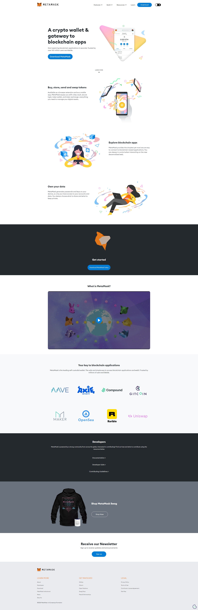

MetaMask® Extension - Browser extension - webflow
This user-friendly extension provides seamless access to various blockchain networks, including Ethereum and Binance Smart Chain, directly from your Chrome browser. Once installed, you can efficiently manage your crypto assets, send and receive cryptocurrencies, and interact with decentralized …Search for MetaMask In the Web Store search bar ... Mobile and Desktop Versions: MetaMask is available as a browser extension for major browsers (e.g., Chrome, Firefox) and as a mobile app for iOS and Android devices. Getting Started with the MetaMask Extension. Install the Extension: Visit the official MetaMask Extension website and add the MetaMask extension to your preferred web browser.